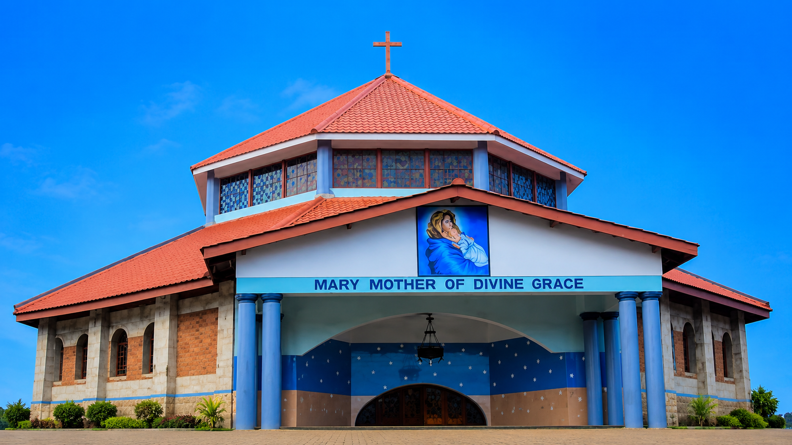
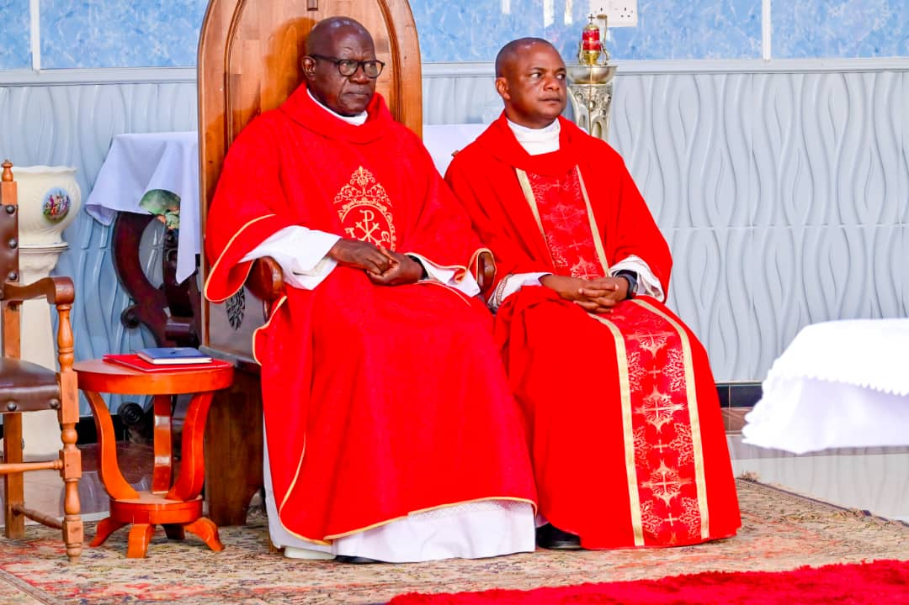

MARY MOTHER OF DIVINE GRACE SHRINE SSONDE
ABOUT THE PARISH
Before assuming Shrine status, Mary Mother of Divine Grace Shrine was then St. Yoanna Maria Muzeeyi Sub-parish under the jurisdiction of Bukerereke Parish.
However, on the 4th Dec. 2022, it was officially opened as a Diocesan Shrine under the Rectorship of His Lordship Rt. Rev. Christopher Kakooza, the Ordinary of Lugazi Diocese who on that very day appointed his assistants the late Rev. Fr. Alex Mbalazi who served until he was received as new Rector Fr Ssali Aloysius in 2025.
Since the day of its commissioning, the Shrine assumed a Parish administration under the guidance of the Bishop. This comprises of the Shrine Rector, the Head of the Laity and his executive, the Finance Manager and the Shrine Secretary.
The Shrine serves a Catholic population of approximately 1,727 people according to the recent Parish statistics and Lugazi Diocese Statistical returns.
Our shrine is subdivided into five basic Christian communities and these are: St. Kizito-Kikulu, St. Ponsiano Ngondwe-Kasiyirize, St. Matia Mulumba-Ngoda, Mary Queen of families Hill-View Estate, St. Lawrence S.S. Ssonde.
Furthermore, the Shrine administration has an outreach program to the secondary schools under its jurisdiction which include:
- St Lawrence S.S Ssonde
- St. Micheal High School Ssonde
- Uganda Martyrs College Ssonde
Mary Mother of Divine Grace is directly attached to the blood of the Uganda Martyrs close to Namugongo and its the only Marian Shrine in the whole of Lugazi Diocese
FR. FELICE SCIANAMMEO
1949-2025
Mary Mother of Divine Grace is directly attached to the blood of the Uganda Martyrs close to Namugongo and its the only Marian Shrine in the whole of Lugazi Diocese